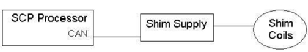
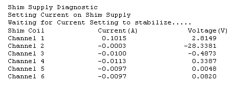

Operating Documentation
Direction 5500113, Rev# 3
Discovery MR750 3.0T Service Methods
Module Version 3.0, Version Date 8/19/08
Operating Documentation |
Diagnostics >> Hardware Location >> Pen Panel Cabinet >> Shim Supply Diagnostics
Diagnostics >> System Function >> Magnet >> Shim Supply Diagnostics
This diagnostic provides operator control for the current on each channel and confirms through read back that the desired current is set.
This diagnostic is part of the Shim Supply Diagnostics that is comprised of a series of tests that verify and display various Shim Supply values by communicating from the SCP to the Shim Supply via the CAN link.
Shim Supply
Coil Channels
RTD Channels
Software Configuration
Standard Software
CAN communications NOT emulated
Hardware Configuration
CAM Chassis: SCP and AGP Processor boards. Bridge board
Shim Supply, cabling, etc
Illustration 1: SHIM Supply Block Diagram

Enter a current for each of the channels 1-6. (–4.000 <= current <= 4.000).
| NOTE: | The Shim Power Supply can supply a maximum of 12 amps. If you attempt to set current to more than 12 amps on all 6 channels, the test will fail and the remaining channels will show 0 (zero) amps and test errors will be logged. This is an expected out put. To test the maximum current on all 6 channels test each channel individually. |
Select the Set Current Test radio button, then click [Run].
The Diagnostic issues a command that sends the non-zero current values to the Shim Supply.
The Diagnostic waits, allowing the command to set the channels’ current.
The Diagnostic issues a command that instructs the Shim Supply to return the present voltage and current for each coil channel.
The Diagnostic displays the results.
| NOTE: | The Shim Supply automatically checks to ensure it is in the proper state prior to running the test. Commands to the Shim Supply are issued via the CAN interface on the SCP. |
A typical test output is shown in Illustration 2. Input errors, Shim Supply State errors, and test condition errors are indicated in red.
Illustration 2: Sample Output
